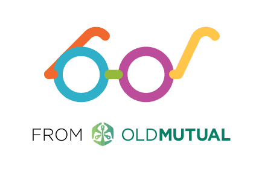
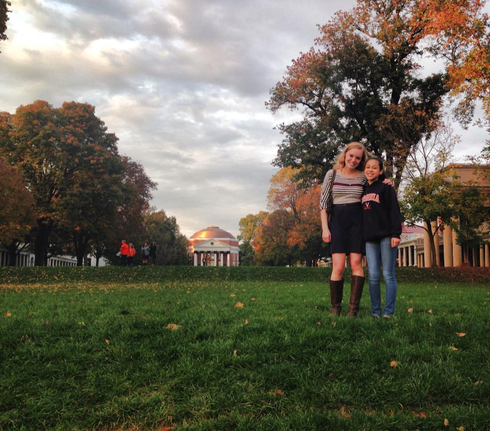

22seven Web Intern
22seven is a finance monitoring web and mobile application based out of Cape Town, South Africa. For four weeks, I interned at 22seven and redesigned their blog. I added functionality, such as search, categorization, and subscription. While their web application is based in Ruby on Rails, a language I had learned prior to interning, I worked primarily with php and wordpress, along with CSS for styling. The result of my work can be seen at blog.22seven.com. Throughout the four weeks, I worked closely with 22seven's front-end designers and human resources staff. I learned to implement the ideas and needs from the HR staff with the restrictions from the front-end designers and the limitations of the source code. I also experienced analyzing User Experience and ensuring accessibility and intuitiveness in app design. This experience allowed me to combine my strengths in computer science and cognitive science to produce a tangible result for a successful company, something that I had not done before.
ideaventions Lab Leader
I worked at ideaventions, a discovery lab for kids, during the summer of 2013. Each week, ideaventions hosted themed science and technology related day camps for elementary school aged students. Prior to the first camp for the summer, I helped to improve the weekly lesson plans and design a new camp theme. To do so, I listed goals for each camp and strategized the best way to accomplish each one. I independently taught labs to groups of eight to ten campers once the camps began. While teaching, I often had to quickly adapt lessons based on the number of students who were absent, what each student was specifically interested in, and various time constraints. I learned to think quickly, plan efficiently, and prioritize to ensure the best experience for all. For more information about ideaventions, check out www.ideaventions.com.
TEDxUVA
I am a founding member, past logistics committee chair, and current secretary of TEDxUVA, an indepently organized TED event. Each year, the Organizing Committee of TEDxUVA plans and executes a Student Speaker Competition to select UVA students to speak at our annual TEDxUVA conference. As the logistics committee chair, I led a team of six in choosing and obtaining a venue, facilitating the design and implementation of the stage design, and coordinating the details of the event. The third annual TEDxUVA conference will be held in February or March 2015. Throughout the past three years, I have played an instrumental role in forming a strong foundation for TEDxUVA so that it can continue to thrive after the founding members graduate. This process has involved significant development of strategy and vision, as well as specific documentation of processes to ease the transition of others into leadership roles for the organization. To learn more about TEDxUVA, visit www.tedxuva.com.

Honor Support Officer
The University of Virginia holds honor in high regard and in turn has a strict and valued honor code. As an Honor Support Officer for the system, I investigate cases and represent students or reporters at trial. In the over fifteen cases I have taken, I have learned the importance of frequent communication and the necessity to gauge the understanding of others. I work closely with other students, as well as University faculty and various community members throughout the case process. In the spring of 2014, I was selected from over 70 members to be a Senior Support Officer. I helped run the recruitment and selection process for the new Support Officer class and am now training the new members. With the other Senior Support Officers, I improved the training curriculum and am now implementing our changes. Additionally,I was chosen to be Pre-Trial Coordinator. For this position, I facilitate pre-trial conferences, during which each side's counsel presents motions regarding what evidence and testimony shall be permissible in trial. I then lead a discussion among the pre-trial panel to determine what information is permitted for trial. Outside of case processing, I am invovled in various educational efforts aimed at increasing the student body's understanding of the Honor System. In particular, I am a member of a Faculty Outreach educational group, through which I am helping to plan an event for new faculty members as well as create a system for professors to better inform their students of the group-work policy for each assignment.
Young Women Leaders Program
Young Women Leaders Program (YWLP) is a selective service-learning organization through the University of Virginia. Once selected as a "big sister" for YWLP, I completed two semesters of classes to enhance my mentoring knowledge and to better understand how the teenage brain operates and how that, in turn, affects the decisions of adolescent girls. During the 2013-2014 school year, I was assigned a "little sister", a eighth grade girl from the Charlottesville community. My "little sister" was identified as having the potential to thrive both academically and as a leader. Throughout the year we spent time together at her middle school and in the greater Charlottesville community. At her middle school, we learned about the engineering cycle and worked with die-cutter machines to design cards and boxes that we then gave to important people in our lives, such as teachers and parents. We shared meals and studied together, among other activities. I liked observing how my relationship with my "little sister" affected her life and motivations for the future. I felt that I had a tangible impact on her, and I now am planning to work with other women at UVA to restart a women in technology club to help younger girls become interested in tech.
Kappa Delta Sorority
I am the Vice President of Operations for the Beta Alpha chapter of Kappa Delta. In this role, I plan the yearly schedule, facilitate officer elections and transitions, and am in close contact with a representative from National Kappa Delta. I aid in leading our chapter of over 130 members to complete various pre-set chapter goals.